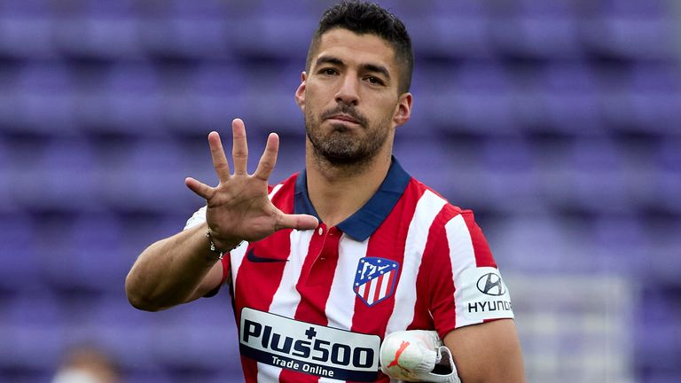

-
(Nhận định bóng đá Atletico Madrid - Barcelona, 2h, 3/10, vòng 8 La Liga) Koeman đứng trước thử thách lớn nhất sự nghiệp cầm quân tại sân Metropolitano.
Ronald Koeman đang đứng trước thử thách lớn nhất trong sự nghiệp cầm quân của mình. Sau trận thua Benfica tại Cúp C1, ban lãnh đạo Barcelona chỉ cho ông thầy người Hà Lan một cơ hội duy nhất, đó là đánh bại Atletico Madrid để giữ lại chiếc ghế tại sân Nou Camp. Tuy nhiên, đây là một nhiệm vụ không hề dễ dàng.

Atletico Madrid của Diego Simeone chưa bao giờ đem lại cảm giác dễ chịu cho đối thủ. Đội chủ sân Wanda Metropolitano sở hữu đội hình có chất lượng chẳng kém gì Barcelona hiện tại. Nếu như so sánh hàng công, Atletico thậm chí còn được đánh giá cao hơn khi có Luis Suarez và Antoine Griezmann, hai người “cũ” của Barcelona.
Rõ ràng, hai tiền đạo này rất muốn chứng tỏ bản thân sau khi bị Barcelona hắt hủi. Suarez đang có phong độ tốt trong khi Griezmann mới tìm lại được cảm giác ghi bàn hồi giữa tuần. Trong khi đó, Koeman đang đối mặt với cuộc nổi loạn ở hàng phòng ngự.
Pique bị thay ra giữa trận đấu với Benfica mà không rõ lý do. Trung vệ người Tây Ban Nha còn phản đối ra mặt ông thầy người Hà Lan trên truyền thông về phát ngôn “Barcelona không đủ tốt để cạnh tranh danh hiệu”. Pique không chỉ đóng góp trên sân mà còn là thủ lĩnh phòng thay đồ hiện tại của Barcelona.

Nếu trung vệ này không ra sân, liệu Barcelona có thể đứng vững trước sức ép từ Atletico với cặp trung vệ non trẻ Eric Garcia – Araujo. Kể cả xoay sang đá 3 trung vệ với sự xuất hiện của Mingueza cũng chẳng cho thấy sự chắc chắn hơn.
Một điểm đáng chú ý là Barcelona chưa biết đến mùi chiến thắng khi phải làm khách ở mùa giải này. Ngoài trận thua Benfica, họ có 2 trận hòa với Cadiz và Bilbao, hai đối thủ bị đánh giá thấp hơn rất nhiều. Mùa này, cổ động viên đã trở lại trên khán đài nên sân nhà sẽ là một lợi thế to lớn cho Atletico Madrid, và sẽ là bất lợi cho Barcelona.
Tuy nhiên trên thực tế, Atletico Madrid cũng chưa tận dụng tốt lợi thế sân nhà khi hòa 3 lần làm chủ gần nhất tính trên mọi đấu trường. Tuy nhiên, thầy trò Simeone sẽ thi đấu rất khác khi phải đối đầu với Barcelona. Nên nhớ rằng, Atletico bất bại trong 4 lần đối đầu gần nhất với Barcelona trong đó có 2 chiến thắng.
Liệu sân Metropolitano có trở thành “tử địa” cho chiếc ghế của Ronald Koeman hay ông thầy người Hà Lan sẽ thoát hiểm một cách ngoạn mục? Với tình hình hiện tại, có lẽ trường hợp một dễ biến thành hiện thực hơn.
Dự đoán tỉ số: Atletico Madrid 2-0 Barcelona
Đội hình dự kiến:
Atletico Madrid: Oblak; Llorente, Savic, Felipe, Lodi; Koke, Kondogbia, De Paul, Carrasco; Suarez, Felix
Barcelona: Ter Stegen; Roberto, Pique, Araujo, Dest; F de Jong, Busquets, Pedri; Memphis, L de Jong, Coutinho
/div>